256 film
Savaş
Savaş filmleri vatansever gösteriden savaş karşıtı protestoya uzanır. Birinci Dünya Savaşı Batı Cephesinde Yeni Bir Şey Yok'u ve Renoir'ın Büyük Yanılsama'sını doğurdu; İkincisi Rossellini'nin Roma, Açık Şehir'ini ve onlarca yıl sürecek cephe filmlerini ilham etti; Vietnam, Coppola'nın Kıyamet'ini ve Kubrick'in Full Metal Jacket'ını getirdi; Almanya, Rusya, Japonya ve Doğu Avrupa'dan sonraki işler savaşa öbür taraftan baktı. En iyi filmler insani bedeli gösterişsiz gösterir.
- Nerede
- ABD, İngiltere, Almanya, Rusya, Japonya, İtalya
- Ne zaman
- 1910'lardan itibaren; büyük dalgalar her dünya savaşı ve Vietnam sonrası
- Önemli isimler
- Jean Renoir, Roberto Rossellini, Stanley Kubrick, Elem Klimov, Francis Ford Coppola, Steven Spielberg
- Dönüm noktası filmler
- Büyük Yanılsama (1937), Zafer Yolları (1957), Kıyamet (1979), Gel ve Gör (1985)
- Mirası
- Kuşakların çatışmayı nasıl hayal ettiğini ve hatırladığını şekillendirdi
Nelere bakmalı
- Gerçekçilik ya da dehşetle sahnelenen çatışma
- Cephenin yanında geri cephe hikâyeleri
- Ahlaki belirsizlik ve sivillere bedeli
- Küçük birliklerde dostluk
- Savaşın hayatta kalanlardaki izi
Bu türde en çok filmi olan yönetmenler
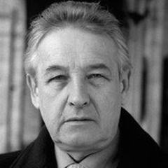
Andrzej Wajda6 film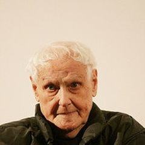
Miklós Jancsó6 film Stanley Kubrick5 film
Stanley Kubrick5 film Edward Dmytryk4 film
Edward Dmytryk4 film Volker Schlöndorff4 film
Volker Schlöndorff4 film Akira Kurosawa3 film
Akira Kurosawa3 film D.W. Griffith3 filmDanis Tanović3 filmDavid Lean3 film
D.W. Griffith3 filmDanis Tanović3 filmDavid Lean3 film Fred Zinnemann3 film
Fred Zinnemann3 film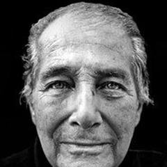
Gillo Pontecorvo3 film James Whale3 film
James Whale3 film Jean-Pierre Melville3 film
Jean-Pierre Melville3 film René Clément3 film
René Clément3 film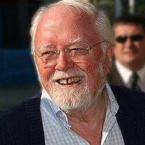
Richard Attenborough3 filmRoberto Rossellini3 film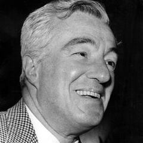
Vittorio De Sica3 film Abel Gance2 film
Abel Gance2 film Agnieszka Holland2 film
Agnieszka Holland2 film Aleksei German2 film
Aleksei German2 film Alexander Dovzhenko2 film
Alexander Dovzhenko2 film Alfred Hitchcock2 film
Alfred Hitchcock2 film Bertrand Tavernier2 film
Bertrand Tavernier2 film Billy Wilder2 film
Billy Wilder2 filmTüm 172 yönetmeni gör
 Carlos Saura2 film
Carlos Saura2 film Charlie Chaplin2 film
Charlie Chaplin2 film Claire Denis2 film
Claire Denis2 film Claude Lanzmann2 filmEmilio Fernández2 filmErmanno Olmi2 film
Claude Lanzmann2 filmEmilio Fernández2 filmErmanno Olmi2 film Ernst Lubitsch2 film
Ernst Lubitsch2 film Fridrikh Ermler2 film
Fridrikh Ermler2 film G.W. Pabst2 film
G.W. Pabst2 film John Huston2 film
John Huston2 film Josef von Sternberg2 film
Josef von Sternberg2 film Kaneto Shindo2 film
Kaneto Shindo2 film Ken Loach2 film
Ken Loach2 film Kim Ki-duk2 film
Kim Ki-duk2 film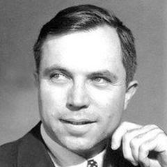
King Vidor2 film Kon Ichikawa2 filmLordan Zafranović2 film
Kon Ichikawa2 filmLordan Zafranović2 film Louis Malle2 film
Louis Malle2 film Luchino Visconti2 filmLuigi Comencini2 film
Luchino Visconti2 filmLuigi Comencini2 film Masaki Kobayashi2 filmMohammed Lakhdar-Hamina2 film
Masaki Kobayashi2 filmMohammed Lakhdar-Hamina2 film Oliver Stone2 film
Oliver Stone2 film Powell & Pressburger2 film
Powell & Pressburger2 film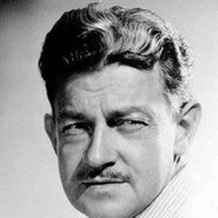
Preston Sturges2 filmRadu Mihăileanu2 film Raoul Walsh2 film
Raoul Walsh2 film Sam Peckinpah2 film
Sam Peckinpah2 film Samuel Fuller2 filmSamuel Maoz2 film
Samuel Fuller2 filmSamuel Maoz2 film Srdjan Dragojević2 film
Srdjan Dragojević2 film Steven Spielberg2 film
Steven Spielberg2 film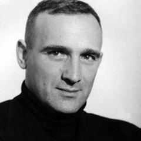
Valerio Zurlini2 filmVeljko Bulajić2 film William Wyler2 filmAbderrahmane Sissako1 filmAdemir Kenović1 film
William Wyler2 filmAbderrahmane Sissako1 filmAdemir Kenović1 film Alain Resnais1 film
Alain Resnais1 film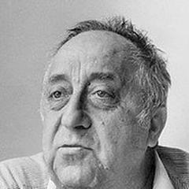
Aleksandar Petrović1 film Alexander Sokurov1 film
Alexander Sokurov1 film Amos Gitai1 film
Amos Gitai1 film Andrei Tarkovsky1 film
Andrei Tarkovsky1 film Andrzej Żuławski1 film
Andrzej Żuławski1 film Ann Hui1 film
Ann Hui1 film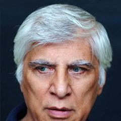
Bahram Beyzaie1 film Benjamin Christensen1 filmBinka Zhelyazkova1 film
Benjamin Christensen1 filmBinka Zhelyazkova1 film Bo Widerberg1 film
Bo Widerberg1 film Bodil Ipsen1 film
Bodil Ipsen1 film Brian De Palma1 film
Brian De Palma1 film Bruno Dumont1 film
Bruno Dumont1 film Carol Reed1 film
Carol Reed1 film Chetan Anand1 film
Chetan Anand1 film Chris Marker1 filmCristian Nemescu1 filmDalibor Matanić1 film
Chris Marker1 filmCristian Nemescu1 filmDalibor Matanić1 film Deepa Mehta1 film
Deepa Mehta1 film Denis Villeneuve1 film
Denis Villeneuve1 film Derek Jarman1 film
Derek Jarman1 film Dino Risi1 film
Dino Risi1 film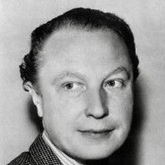
Douglas Sirk1 filmEdgar Reitz1 filmEdward Berger1 film Elem Klimov1 film
Elem Klimov1 film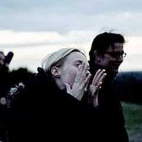
Feo Aladag1 film Fernando Solanas1 filmFlora Gomes1 film
Fernando Solanas1 filmFlora Gomes1 film Francesco Rosi1 film
Francesco Rosi1 film Francis Ford Coppola1 film
Francis Ford Coppola1 film František Čáp1 film
František Čáp1 film François Truffaut1 film
François Truffaut1 film Fritz Lang1 film
Fritz Lang1 film Gavin Hood1 film
Gavin Hood1 film Giuseppe Tornatore1 film
Giuseppe Tornatore1 film Guillermo del Toro1 film
Guillermo del Toro1 film Haile Gerima1 film
Haile Gerima1 film Hal Ashby1 film
Hal Ashby1 film Hou Hsiao-hsien1 film
Hou Hsiao-hsien1 film Howard Hawks1 filmIsao Takahata1 filmIstván Szabó1 film
Howard Hawks1 filmIsao Takahata1 filmIstván Szabó1 film Jan Troell1 film
Jan Troell1 film Janez Burger1 filmJasmila Žbanić1 film
Janez Burger1 filmJasmila Žbanić1 film Jean Renoir1 film
Jean Renoir1 film Jean-Luc Godard1 film
Jean-Luc Godard1 film Jerzy Skolimowski1 film
Jerzy Skolimowski1 film John Ford1 filmJoseph Cedar1 film
John Ford1 filmJoseph Cedar1 film Joseph L. Mankiewicz1 film
Joseph L. Mankiewicz1 film Joseph Losey1 film
Joseph Losey1 film Kaouther Ben Hania1 film
Kaouther Ben Hania1 film Kathryn Bigelow1 film
Kathryn Bigelow1 film Keisuke Kinoshita1 filmKenji Mizoguchi1 filmKrzysztof Zanussi1 film
Keisuke Kinoshita1 filmKenji Mizoguchi1 filmKrzysztof Zanussi1 film Larisa Shepitko1 film
Larisa Shepitko1 film Leopold Lindtberg1 film
Leopold Lindtberg1 film Lina Wertmüller1 film
Lina Wertmüller1 film Lucian Pintilie1 filmLuis García Berlanga1 film
Lucian Pintilie1 filmLuis García Berlanga1 film Lütfi Ömer Akad1 film
Lütfi Ömer Akad1 film Margarethe von Trotta1 film
Margarethe von Trotta1 film Mario Monicelli1 film
Mario Monicelli1 film Mauritz Stiller1 filmMed Hondo1 film
Mauritz Stiller1 filmMed Hondo1 film Michael Cimino1 film
Michael Cimino1 film Michael Curtiz1 film
Michael Curtiz1 film Michael Moore1 filmMichael Radford1 filmMichael Winterbottom1 film
Michael Moore1 filmMichael Radford1 filmMichael Winterbottom1 film Michel Hazanavicius1 filmMike Nichols1 film
Michel Hazanavicius1 filmMike Nichols1 film Mikhail Kalatozov1 film
Mikhail Kalatozov1 film Milčo Mančevski1 film
Milčo Mančevski1 film Mohamed Diab1 film
Mohamed Diab1 film Mohsen Makhmalbaf1 filmMárta Mészáros1 film
Mohsen Makhmalbaf1 filmMárta Mészáros1 film Nicholas Ray1 film
Nicholas Ray1 film Nikita Mikhalkov1 film
Nikita Mikhalkov1 film Orson Welles1 film
Orson Welles1 film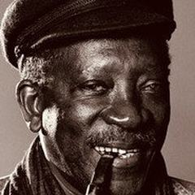
Ousmane Sembène1 film Paul Greengrass1 filmPeter Lilienthal1 film
Paul Greengrass1 filmPeter Lilienthal1 film Peter Weir1 film
Peter Weir1 film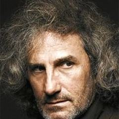
Philippe Garrel1 film Quentin Tarantino1 film
Quentin Tarantino1 film Ridley Scott1 film
Ridley Scott1 film Robert Altman1 film
Robert Altman1 film Robert Bresson1 film
Robert Bresson1 film Sam Mendes1 film
Sam Mendes1 film Sidney Lumet1 film
Sidney Lumet1 film Spike Lee1 filmSrđan Karanović1 film
Spike Lee1 filmSrđan Karanović1 film Steve McQueen1 film
Steve McQueen1 film Steven Soderbergh1 film
Steven Soderbergh1 film Terrence Malick1 film
Terrence Malick1 film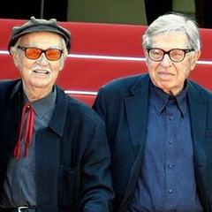
The Taviani Brothers1 film Theo Angelopoulos1 film
Theo Angelopoulos1 film Victor Fleming1 film
Victor Fleming1 film Victor Sjöström1 film
Victor Sjöström1 film Vsevolod Pudovkin1 film
Vsevolod Pudovkin1 film Werner Herzog1 film
Werner Herzog1 film Woody Allen1 film
Woody Allen1 film Zhang Yimou1 film
Zhang Yimou1 film Želimir Žilnik1 film
Želimir Žilnik1 film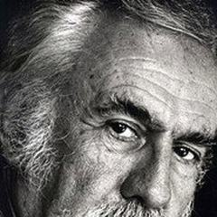
Živojin Pavlović1 filmSık birlikte görülen türler
256 film, en yüksek puandan başlayarak
- Shoah 1985 · Claude Lanzmann · IMDb 8,7
- Pretty Village, Pretty Flame 1996 · Srdjan Dragojević · IMDb 8,6
- Saving Private Ryan 1998 · Steven Spielberg · IMDb 8,6
- Casablanca 1942 · Michael Curtiz · IMDb 8,5
- Grave of the Fireflies 1988 · Isao Takahata · IMDb 8,5
- Apocalypse Now 1979 · Francis Ford Coppola · IMDb 8,4
- Inglourious Basterds 2009 · Quentin Tarantino · IMDb 8,4
- Paths of Glory 1957 · Stanley Kubrick · IMDb 8,4
- The Great Dictator 1940 · Charlie Chaplin · IMDb 8,4
- Come and See 1985 · Elem Klimov · IMDb 8,3
- Incendies 2010 · Denis Villeneuve · IMDb 8,3
- The Cranes Are Flying 1957 · Mikhail Kalatozov · IMDb 8,3
- To Live 1994 · Zhang Yimou · IMDb 8,3
- 1917 2019 · Sam Mendes · IMDb 8,2
- Full Metal Jacket 1987 · Stanley Kubrick · IMDb 8,2
- Gone with the Wind 1939 · Victor Fleming · IMDb 8,2
- Pan's Labyrinth 2006 · Guillermo del Toro · IMDb 8,2
- Ran 1985 · Akira Kurosawa · IMDb 8,2
- Sky Hook 2000 · Srdjan Dragojević · IMDb 8,2
- The Ascent 1977 · Larisa Shepitko · IMDb 8,2
- The Voice of Hind Rajab 2025 · Kaouther Ben Hania · IMDb 8,2
- A Man Escaped 1956 · Robert Bresson · IMDb 8,1
- Army of Shadows 1969 · Jean-Pierre Melville · IMDb 8,1
- Barry Lyndon 1975 · Stanley Kubrick · IMDb 8,1
- Petria's Wreath 1980 · Srđan Karanović · IMDb 8,1
- The Battle of Algiers 1966 · Gillo Pontecorvo · IMDb 8,1
- The Best Years of Our Lives 1946 · William Wyler · IMDb 8,1
- The Bridge on the River Kwai 1957 · David Lean · IMDb 8,1
- The Deer Hunter 1978 · Michael Cimino · IMDb 8,1
- The Great War 1959 · Mario Monicelli · IMDb 8,1
- The Perfect Circle 1997 · Ademir Kenović · IMDb 8,1
- To Be or Not to Be 1942 · Ernst Lubitsch · IMDb 8,1
- Ugetsu 1953 · Kenji Mizoguchi · IMDb 8,1
- A Difficult Life 1961 · Dino Risi · IMDb 8,0
- Au revoir les enfants 1987 · Louis Malle · IMDb 8,0
- Forbidden Games 1952 · René Clément · IMDb 8,0
- Ivan's Childhood 1962 · Andrei Tarkovsky · IMDb 8,0
- La Grande Illusion 1937 · Jean Renoir · IMDb 8,0
- Platoon 1986 · Oliver Stone · IMDb 8,0
- Quo Vadis, Aida? 2020 · Jasmila Žbanić · IMDb 8,0
- Rome, Open City 1945 · Roberto Rossellini · IMDb 8,0
- The Burmese Harp 1956 · Kon Ichikawa · IMDb 8,0
- The Life and Death of Colonel Blimp 1943 · Powell & Pressburger · IMDb 8,0
- Bashu, the Little Stranger 1989 · Bahram Beyzaie · IMDb 7,9
- Doctor Zhivago 1965 · David Lean · IMDb 7,9
- Fires on the Plain 1959 · Kon Ichikawa · IMDb 7,9
- Kagemusha 1980 · Akira Kurosawa · IMDb 7,9
- Kanal 1957 · Andrzej Wajda · IMDb 7,9
- No Man's Land 2001 · Danis Tanović · IMDb 7,9
- Stalag 17 1953 · Billy Wilder · IMDb 7,9
- All Quiet on the Western Front 2022 · Edward Berger · IMDb 7,8
- Before the Rain 1994 · Milčo Mančevski · IMDb 7,8
- Burnt by the Sun 1994 · Nikita Mikhalkov · IMDb 7,8
- The Big Parade 1925 · King Vidor · IMDb 7,8
- The Hill 1965 · Sidney Lumet · IMDb 7,8
- The Search (1948) 1948 · Fred Zinnemann · IMDb 7,8
- Ashes and Diamonds 1958 · Andrzej Wajda · IMDb 7,7
- California Dreamin' 2007 · Cristian Nemescu · IMDb 7,7
- Camp de Thiaroye 1988 · Ousmane Sembène · IMDb 7,7
- Empire of the Sun 1987 · Steven Spielberg · IMDb 7,7
- Everybody Go Home 1960 · Luigi Comencini · IMDb 7,7
- General Della Rovere 1959 · Roberto Rossellini · IMDb 7,7
- J'accuse 1919 · Abel Gance · IMDb 7,7
- Seven Beauties 1975 · Lina Wertmüller · IMDb 7,7
- The Man Who Would Be King 1975 · John Huston · IMDb 7,7
- Three 1965 · Aleksandar Petrović · IMDb 7,7
- Twenty Days Without War 1976 · Aleksei German · IMDb 7,7
- Two Women 1960 · Vittorio De Sica · IMDb 7,7
- A Time to Love and a Time to Die 1958 · Douglas Sirk · IMDb 7,6
- Bloody Sunday 2002 · Paul Greengrass · IMDb 7,6
- Children of Hiroshima 1952 · Kaneto Shindo · IMDb 7,6
- Earth (1998) 1998 · Deepa Mehta · IMDb 7,6
- Enamorada 1946 · Emilio Fernández · IMDb 7,6
- From Here to Eternity 1953 · Fred Zinnemann · IMDb 7,6
- Hail the Conquering Hero 1944 · Preston Sturges · IMDb 7,6
- Kapò 1960 · Gillo Pontecorvo · IMDb 7,6
- Lacombe, Lucien 1974 · Louis Malle · IMDb 7,6
- Le Silence de la mer 1949 · Jean-Pierre Melville · IMDb 7,6
- Lifeboat 1944 · Alfred Hitchcock · IMDb 7,6
- Love and Death 1975 · Woody Allen · IMDb 7,6
- Mrs. Miniver 1942 · William Wyler · IMDb 7,6
- Paisan 1946 · Roberto Rossellini · IMDb 7,6
- The Ambush 1969 · Živojin Pavlović · IMDb 7,6
- The Caine Mutiny 1954 · Edward Dmytryk · IMDb 7,6
- The Hour of the Furnaces 1968 · Fernando Solanas · IMDb 7,6
- The Thin Red Line 1998 · Terrence Malick · IMDb 7,6
- Tokyo Trial 1983 · Masaki Kobayashi · IMDb 7,6
- Train of Life 1998 · Radu Mihăileanu · IMDb 7,6
- Ulysses' Gaze 1995 · Theo Angelopoulos · IMDb 7,6
- Europa Europa 1990 · Agnieszka Holland · IMDb 7,5
- Fahrenheit 9/11 2004 · Michael Moore · IMDb 7,5
- King and Country 1964 · Joseph Losey · IMDb 7,5
- Land and Freedom 1995 · Ken Loach · IMDb 7,5
- Life and Nothing But 1989 · Bertrand Tavernier · IMDb 7,5
- Léon Morin, Priest 1961 · Jean-Pierre Melville · IMDb 7,5
- Occupation in 26 Pictures 1978 · Lordan Zafranović · IMDb 7,5
- The Desert of the Tartars 1976 · Valerio Zurlini · IMDb 7,5
- The Hurt Locker 2008 · Kathryn Bigelow · IMDb 7,5
- The Miracle of Morgan's Creek 1944 · Preston Sturges · IMDb 7,5
- The Red and the White 1967 · Miklós Jancsó · IMDb 7,5
- The Round-Up 1965 · Miklós Jancsó · IMDb 7,5 · Dram, Tarih, Savaş
- The Wind That Shakes the Barley 2006 · Ken Loach · IMDb 7,5 · Dram, Savaş
- A Bridge Too Far 1977 · Richard Attenborough · IMDb 7,4 · Dram, Tarih, Savaş
- Clash 2016 · Mohamed Diab · IMDb 7,4 · Dram, Gerilim, Savaş
- Cluny Brown 1946 · Ernst Lubitsch · IMDb 7,4 · Komedi, Romantik, Savaş
- Confidence 1980 · István Szabó · IMDb 7,4 · Dram, Savaş
- Cross of Iron 1977 · Sam Peckinpah · IMDb 7,4 · Dram, Savaş
- Foreign Correspondent 1940 · Alfred Hitchcock · IMDb 7,4 · Gerilim, Savaş, Gizem
- Korczak 1990 · Andrzej Wajda · IMDb 7,4 · Biyografi, Dram, Savaş
- Macbeth 1948 · Orson Welles · IMDb 7,4 · Dram, Tarih, Savaş
- Malèna 2000 · Giuseppe Tornatore · IMDb 7,4 · Dram, Romantik, Savaş
- My Way Home 1964 · Miklós Jancsó · IMDb 7,4 · Dram, Savaş
- Senso 1954 · Luchino Visconti · IMDb 7,4 · Dram, Romantik, Savaş
- The Damned (1969) 1969 · Luchino Visconti · IMDb 7,4 · Dram, Savaş
- The Duellists 1977 · Ridley Scott · IMDb 7,4 · Dram, Savaş
- The Heifer 1985 · Luis García Berlanga · IMDb 7,4 · Komedi, Savaş
- The Steel Helmet 1951 · Samuel Fuller · IMDb 7,4 · Aksiyon, Dram, Savaş
- The Tin Drum 1979 · Volker Schlöndorff · IMDb 7,4 · Dram, Savaş
- Waterloo Bridge 1931 · James Whale · IMDb 7,4 · Dram, Romantik, Savaş
- 49th Parallel 1941 · Powell & Pressburger · IMDb 7,3 · Dram, Gerilim, Savaş
- Beau travail 1999 · Claire Denis · IMDb 7,3 · Dram, Savaş
- Coming Home 1978 · Hal Ashby · IMDb 7,3 · Dram, Romantik, Savaş
- Eye in the Sky 2015 · Gavin Hood · IMDb 7,3 · Dram, Gerilim, Savaş
- Five Graves to Cairo 1943 · Billy Wilder · IMDb 7,3 · Dram, Gerilim, Savaş
- M*A*S*H 1970 · Robert Altman · IMDb 7,3 · Komedi, Dram, Savaş
- Shoulder Arms 1918 · Charlie Chaplin · IMDb 7,3 · Komedi, Savaş
- Sunflower 1970 · Vittorio De Sica · IMDb 7,3 · Dram, Savaş
- Terje Vigen 1917 · Victor Sjöström · IMDb 7,3 · Dram, Savaş
- The Last Metro 1980 · François Truffaut · IMDb 7,3 · Dram, Romantik, Savaş
- The Third Part of the Night 1971 · Andrzej Żuławski · IMDb 7,3 · Dram, Korku, Savaş
- Violent Summer 1959 · Valerio Zurlini · IMDb 7,3 · Dram, Romantik, Savaş
- Westfront 1918 1930 · G.W. Pabst · IMDb 7,3 · Dram, Romantik, Savaş
- Address Unknown 2001 · Kim Ki-duk · IMDb 7,2 · Dram, Savaş
- An Unforgettable Summer 1994 · Lucian Pintilie · IMDb 7,2 · Dram, Romantik, Savaş
- Born on the Fourth of July 1989 · Oliver Stone · IMDb 7,2 · Biyografi, Dram, Savaş
- Captain Conan 1996 · Bertrand Tavernier · IMDb 7,2 · Dram, Savaş
- Dishonored 1931 · Josef von Sternberg · IMDb 7,2 · Dram, Romantik, Savaş
- Evening Bells 1986 · Lordan Zafranović · IMDb 7,2 · Dram, Savaş
- Flor silvestre 1943 · Emilio Fernández · IMDb 7,2 · Dram, Romantik, Savaş
- Foxtrot 2017 · Samuel Maoz · IMDb 7,2 · Dram, Savaş
- Hamsun 1996 · Jan Troell · IMDb 7,2 · Biyografi, Dram, Savaş
- In Which We Serve 1942 · David Lean · IMDb 7,2 · Dram, Savaş
- Kozara 1962 · Veljko Bulajić · IMDb 7,2 · Dram, Savaş
- Merry Christmas, Mr. Lawrence 1983 · Nagisa Oshima · IMDb 7,2 · Dram, Savaş
- Rescue Dawn 2006 · Werner Herzog · IMDb 7,2 · Macera, Biyografi, Savaş
- Rhapsody in August 1991 · Akira Kurosawa · IMDb 7,2 · Dram, Savaş
- The Garden of the Finzi-Continis 1970 · Vittorio De Sica · IMDb 7,2 · Dram, Tarih, Savaş
- The Last Ten Days 1955 · G.W. Pabst · IMDb 7,2 · Dram, Tarih, Savaş
- The War Is Over 1966 · Alain Resnais · IMDb 7,2 · Dram, Savaş
- They Died with Their Boots On 1941 · Raoul Walsh · IMDb 7,2 · Dram, Savaş, Western
- A Generation 1955 · Andrzej Wajda · IMDb 7,1 · Dram, Savaş
- A Year of the Quiet Sun 1984 · Krzysztof Zanussi · IMDb 7,1 · Dram, Romantik, Savaş
- Angry Harvest 1985 · Agnieszka Holland · IMDb 7,1 · Dram, Romantik, Savaş
- Arsenal 1929 · Alexander Dovzhenko · IMDb 7,1 · Dram, Savaş
- Catch-22 1970 · Mike Nichols · IMDb 7,1 · Komedi, Dram, Savaş
- Circle of Deceit 1981 · Volker Schlöndorff · IMDb 7,1 · Dram, Savaş
- Diplomacy 2014 · Volker Schlöndorff · IMDb 7,1 · Dram, Tarih, Savaş
- Le Petit Soldat 1963 · Jean-Luc Godard · IMDb 7,1 · Dram, Savaş
- Man Hunt 1941 · Fritz Lang · IMDb 7,1 · Gerilim, Savaş, Macera
- Queimada 1969 · Gillo Pontecorvo · IMDb 7,1 · Aksiyon, Dram, Savaş
- The Big Red One 1980 · Samuel Fuller · IMDb 7,1 · Dram, Savaş
- The Red Badge of Courage 1951 · John Huston · IMDb 7,1 · Dram, Savaş
- The Year of Living Dangerously 1982 · Peter Weir · IMDb 7,1 · Dram, Romantik, Savaş
- The Young Lions 1958 · Edward Dmytryk · IMDb 7,1 · Aksiyon, Dram, Savaş
- Timbuktu 2014 · Abderrahmane Sissako · IMDb 7,1 · Dram, Savaş
- ¡Ay, Carmela! 1990 · Carlos Saura · IMDb 7,1 · Komedi, Dram, Savaş
- Anatahan 1953 · Josef von Sternberg · IMDb 7,0 · Dram, Tarih, Savaş
- Battle of the Rails 1946 · René Clément · IMDb 7,0 · Dram, Tarih, Savaş
- Coup de Grâce 1976 · Volker Schlöndorff · IMDb 7,0 · Dram, Romantik, Savaş
- Drums Along the Mohawk 1939 · John Ford · IMDb 7,0 · Dram, Romantik, Savaş
- I Was a Male War Bride 1949 · Howard Hawks · IMDb 7,0 · Komedi, Romantik, Savaş
- Katyn 2007 · Andrzej Wajda · IMDb 7,0 · Dram, Tarih, Savaş
- Level Five 1997 · Chris Marker · IMDb 7,0 · Belgesel, Romantik, Savaş
- Liberté, la nuit 1983 · Philippe Garrel · IMDb 7,0 · Dram, Savaş
- Mortu Nega 1988 · Flora Gomes · IMDb 7,0 · Dram, Savaş
- Oh! What a Lovely War 1969 · Richard Attenborough · IMDb 7,0 · Komedi, Müzikal, Savaş
- Postcard 2010 · Kaneto Shindo · IMDb 7,0 · Dram, Romantik, Savaş
- Sarraounia 1986 · Med Hondo · IMDb 7,0 · Dram, Tarih, Savaş
- The Battle of Neretva 1969 · Veljko Bulajić · IMDb 7,0 · Dram, Tarih, Savaş
- The High Sun 2015 · Dalibor Matanić · IMDb 7,0 · Dram, Romantik, Savaş
- The Puppetmaster 1993 · Hou Hsiao-hsien · IMDb 7,0 · Biyografi, Dram, Savaş
- Zero Hour 1977 · Edgar Reitz · IMDb 7,0 · Dram, Romantik, Savaş
- Greenery Will Bloom Again 2014 · Ermanno Olmi · IMDb 6,9 · Dram, Tarih, Savaş
- Lebanon 2009 · Samuel Maoz · IMDb 6,9 · Dram, Savaş
- Morning for the Osone Family 1946 · Keisuke Kinoshita · IMDb 6,9 · Dram, Savaş
- Storm Over Asia 1928 · Vsevolod Pudovkin · IMDb 6,9 · Dram, Savaş
- The Profession of Arms 2001 · Ermanno Olmi · IMDb 6,9 · Dram, Tarih, Savaş
- The Way Ahead 1944 · Carol Reed · IMDb 6,9 · Dram, Savaş
- White Material 2009 · Claire Denis · IMDb 6,9 · Dram, Savaş
- Alexandra 2007 · Alexander Sokurov · IMDb 6,8 · Dram, Savaş
- All Things Fair 1995 · Bo Widerberg · IMDb 6,8 · Dram, Romantik, Savaş
- Is Paris Burning? 1966 · René Clément · IMDb 6,8 · Dram, Tarih, Savaş
- Journey's End 1930 · James Whale · IMDb 6,8 · Dram, Savaş
- Silence and Cry 1968 · Miklós Jancsó · IMDb 6,8 · Dram, Savaş
- Silent Sonata 2010 · Janez Burger · IMDb 6,8 · Dram, Savaş
- The Search 2014 · Michel Hazanavicius · IMDb 6,8 · Dram, Savaş
- What Price Glory 1926 · Raoul Walsh · IMDb 6,8 · Komedi, Dram, Savaş
- Beaufort 2007 · Joseph Cedar · IMDb 6,7 · Aksiyon, Dram, Savaş
- Behold a Pale Horse 1964 · Fred Zinnemann · IMDb 6,7 · Dram, Savaş
- Bitter Victory 1957 · Nicholas Ray · IMDb 6,7 · Dram, Savaş
- Good Morning, Babylon 1987 · The Taviani Brothers · IMDb 6,7 · Dram, Romantik, Savaş
- Hotel Imperial 1927 · Mauritz Stiller · IMDb 6,7 · Dram, Savaş
- Major Dundee 1965 · Sam Peckinpah · IMDb 6,7 · Macera, Dram, Savaş
- Red Psalm 1971 · Miklós Jancsó · IMDb 6,7 · Dram, Müzikal, Savaş
- Rosenstrasse 2003 · Margarethe von Trotta · IMDb 6,7 · Dram, Savaş
- The Red Meadows 1945 · Bodil Ipsen · IMDb 6,7 · Dram, Savaş
- War and Peace 1956 · King Vidor · IMDb 6,7 · Dram, Romantik, Savaş
- Welcome to Sarajevo 1997 · Michael Winterbottom · IMDb 6,7 · Dram, Savaş
- Young Winston 1972 · Richard Attenborough · IMDb 6,7 · Biyografi, Dram, Savaş
- Back to Bataan 1945 · Edward Dmytryk · IMDb 6,6 · Dram, Savaş
- Goya in Bordeaux 1999 · Carlos Saura · IMDb 6,6 · Biyografi, Dram, Savaş
- Marriage of the Blessed 1989 · Mohsen Makhmalbaf · IMDb 6,6 · Suç, Dram, Savaş
- Occupied City 2023 · Steve McQueen · IMDb 6,6 · Belgesel, Tarih, Savaş
- The Heiresses 1980 · Márta Mészáros · IMDb 6,6 · Dram, Romantik, Savaş
- The Truce 1997 · Francesco Rosi · IMDb 6,6 · Dram, Savaş
- War Requiem 1989 · Derek Jarman · IMDb 6,6 · Dram, Savaş
- Da 5 Bloods 2020 · Spike Lee · IMDb 6,5 · Macera, Dram, Savaş
- Flandres 2006 · Bruno Dumont · IMDb 6,5 · Dram, Romantik, Savaş
- Hearts of the World 1918 · D.W. Griffith · IMDb 6,5 · Dram, Romantik, Savaş
- Inbetween Worlds 2014 · Feo Aladag · IMDb 6,5 · Dram, Savaş
- The Last Chance 1945 · Leopold Lindtberg · IMDb 6,5 · Dram, Savaş
- Triage 2009 · Danis Tanović · IMDb 6,5 · Dram, Gizem, Savaş
- Agnus Dei 1970 · Miklós Jancsó · IMDb 6,4 · Dram, Savaş
- Another Time, Another Place 1983 · Michael Radford · IMDb 6,4 · Dram, Savaş
- David 1979 · Peter Lilienthal · IMDb 6,4 · Dram, Savaş
- Marble Ass 1995 · Želimir Žilnik · IMDb 6,4 · Komedi, Dram, Savaş
- Our Time Will Come 2017 · Ann Hui · IMDb 6,4 · Dram, Savaş
- The Coast Guard 2002 · Kim Ki-duk · IMDb 6,4 · Dram, Savaş
- Kippur 2000 · Amos Gitai · IMDb 6,3 · Dram, Savaş
- Men Without Wings 1946 · František Čáp · IMDb 6,3 · Dram, Savaş
- Raintree County 1957 · Edward Dmytryk · IMDb 6,3 · Dram, Romantik, Savaş
- Samson 1961 · Andrzej Wajda · IMDb 6,3 · Dram, Romantik, Savaş
- The History of Love 2016 · Radu Mihăileanu · IMDb 6,3 · Dram, Romantik, Savaş
- Austerlitz 1960 · Abel Gance · IMDb 6,2 · Dram, Tarih, Savaş
- Shchors 1939 · Alexander Dovzhenko · IMDb 6,2 · Biyografi, Dram, Savaş
- The Road Back 1937 · James Whale · IMDb 6,2 · Dram, Romantik, Savaş
- Essential Killing 2010 · Jerzy Skolimowski · IMDb 6,1 · Aksiyon, Gerilim, Savaş
- Redacted 2007 · Brian De Palma · IMDb 6,1 · Suç, Gerilim, Savaş
- The Birth of a Nation 1915 · D.W. Griffith · IMDb 6,0 · Dram, Savaş
- The Turning Point 1945 · Fridrikh Ermler · IMDb 5,9 · Dram, Savaş
- Abraham Lincoln 1930 · D.W. Griffith · IMDb 5,7 · Biyografi, Dram, Savaş
- Fear and Desire 1953 · Stanley Kubrick · IMDb 5,3 · Dram, Gerilim, Savaş
- Adwa: An African Victory 1999 · Haile Gerima · Belgesel, Tarih, Savaş
- Che 2008 · Steven Soderbergh · Biyografi, Dram, Savaş
- Circus Columbia 2010 · Danis Tanović · Dram, Komedi, Savaş
- December 1972 · Mohammed Lakhdar-Hamina · Savaş, Dram
- Dr. Strangelove 1964 · Stanley Kubrick · Komedi, Savaş
- Five Fingers 1952 · Joseph L. Mankiewicz · Gerilim, Savaş, Dram
- She Defends Her Country 1943 · Fridrikh Ermler · Savaş, Dram
- Sobibor, 14 October 1943, 4 p.m. 2001 · Claude Lanzmann · Belgesel, Tarih, Savaş
- The Attached Balloon 1967 · Binka Zhelyazkova · Komedi, Savaş
- The Girl of Bube 1963 · Luigi Comencini · Dram, Romantik, Savaş
- The Human Condition 1959 · Masaki Kobayashi · Savaş, Dram, Tarih
- The Mysterious X 1914 · Benjamin Christensen · Gerilim, Savaş, Suç
- Trial on the Road 1971 · Aleksei German · Savaş, Dram
- Wind of the Aurès 1966 · Mohammed Lakhdar-Hamina · Dram, Savaş